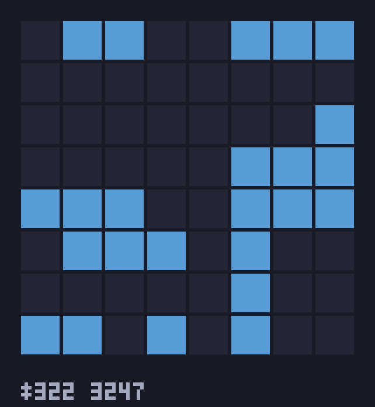
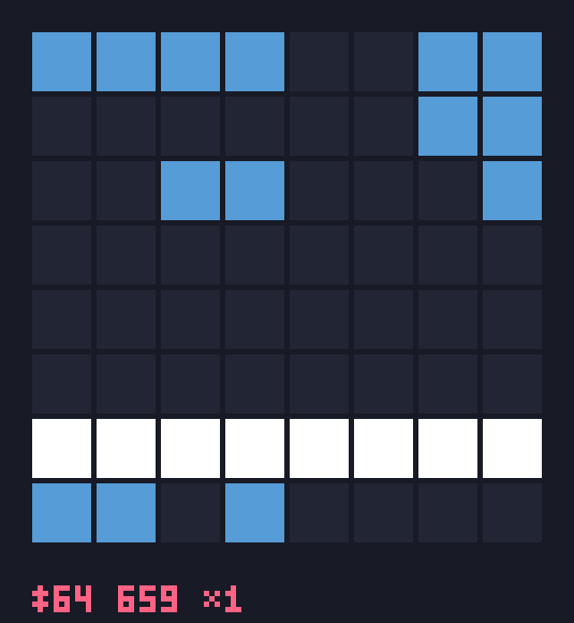
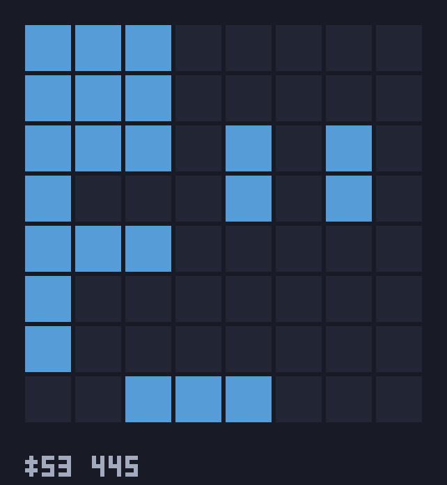
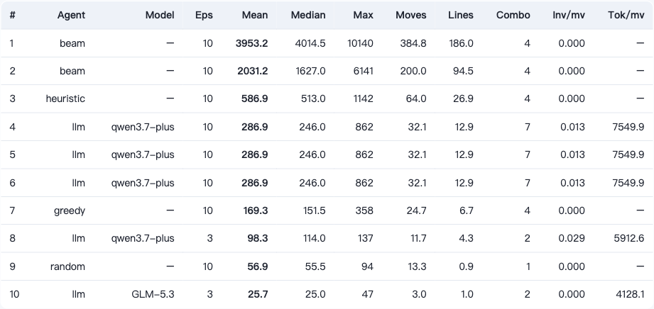
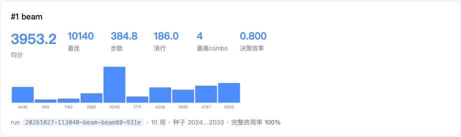

项目作品集 · AI AGENT BENCHMARK
blockblast-bench
复刻 Block Blast!（8×8 方块消除）游戏机制的确定性评测环境，让大模型与经典算法同台对局，量化评测 LLM 的空间规划、长程决策与指令遵循能力。
GitHub：github.com/kittimzhe/blockblast-bench（MIT 开源） | 在线报告：kittimzhe.github.io/blockblast-bench
0第三方依赖
纯标准库
105自动化测试
四层金字塔
6Agent 梯度
random→beam→LLM
10140单局最高分
beam-80 · 1004 步
2×CIPython 3.9/3.13
全绿
100%确定性复现
同种子=同牌序
1为什么做这个项目
现有 LLM 基准大多测知识与代码，缺少可复现、可量化的「空间规划 + 长程决策」评测。Block Blast! 恰好是一个规则极简但策略深度极高的载体：放错一块，几十步后才暴露恶果。
- 确定性公平——同一种子 = 同一牌序，所有 Agent 面对完全相同的发牌，分差只来自决策质量；
- 梯度化参照系——random / greedy / heuristic / beam 四级经典基线，把 LLM 的成绩「放进刻度尺」解读；
- 失败也是数据——非法落子不视为 bug，而是「指令遵循」的测量对象（反馈重试 + 非法率指标）；
- 全链路可观测——每局完整转录 → 决策质量分析 → GIF 回放 → HTML 报告，败局可逐帧归因。
Python 3.9+零依赖设计LLM Agent
Beam Searchinspect_aiGitHub Actions CI
GIF89a 手写编码器GitHub Pagespytest 不变量/模糊测试
游戏机制（忠实复刻）
- 8×8 棋盘，托盘 3 块全部用完才补发；方块不可旋转/翻转（19 种形状库）；
- 整行/整列同时消除，连续消除累积 combo 倍率，全清 +300；
- 剩余方块无处可放即终局；计分为可配置的近似复刻（+1/格、行分 10/30/60…、combo 封顶 ×4、全清 +300）。
评测协议
- 默认种子集 2024–2033 共 10 局，所有 Agent 同集对比；
- LLM 观测：坐标标注文本棋盘 + 托盘小图；动作：
{"piece","row","col"}；
- 非法步反馈后每步至多重试 2 次，并记入 invalid_per_move 指标。
项目速览
| 代码规模 | 3435 行源码 + 1567 行测试（测试占比 31%） |
| 运行环境 | Python 3.9–3.13，零第三方依赖，克隆即跑 |
| 评测规模 | 10 个入库 run，累计 7875 步真实对局数据 |
| 开源状态 | MIT · CI 双版本全绿 · Pages 在线报告 · 打包就绪 |
最具代表性的三个技术难点
- 确定性与可续跑的统一——用「重放转录恢复状态」把断点续跑做成无损操作，同时成为 golden 测试的地基；
- 手写 GIF89a + LZW 编码器——为守住零依赖承诺，自行实现图像编码，并用 Pillow 做像素级反向校验；
- 把平台故障与模型能力解耦——三类网络故障各自机制化处理，使评测结论不被基础设施噪声污染。
1 / 4
2一张图看懂评测对象

beam 搜索基线（托盘周期精确前瞻）
单局 6141 分 / 587 步，板面始终保持低碎片化

heuristic 基线（贪心 + 板面形状特征）
单局 1142 分 / 116 步，有形状管理意识

qwen3.7-plus（LLM）最佳局 862 分 / 87 步
37 次消行 · combo×7，超过 heuristic 均值
▲ 各 Agent 实战对局 GIF 回放中的关键帧（琥珀色=新落子，底部 HUD 为步数/得分/combo）。完整动图见仓库 README 与在线报告。
3系统架构：评测流水线
① 游戏引擎 env
19 形状库 · 放置/消除/计分纯函数 · 种子化 RNG · 不可变 Observation · 敌意输入只抛 InvalidActionError 且状态零污染
② Agent 层
random / greedy / heuristic / beam（托盘周期精确前瞻） / LLM（任意 OpenAI 兼容端点，urllib 实现）
③ 评测 harness
固定种子集 · 并发评测 · 非法步反馈重试 · 断点续跑 --resume · 异常兜底不炸整轮 · JSON 转录落盘
④ 结果层
runs.jsonl 排行榜（追加式） · summary.json 聚合 · 每局完整 transcript（+LLM 对话可选）
▼ 同一份转录数据，四路消费 ▼
决策质量分析
analyze：逐步对照单步最优 → 贪心效率 / 消行把握 / 漏消次数 / 终局碎片化 / 非法步分类
GIF 回放
手写 GIF89a+LZW 编码器（≈150 行，零图像依赖），测试用 Pillow 像素级解码校验
HTML 报告
单文件（零 JS/外部资源）：排行榜 + KPI 卡片 + SVG 逐局图表，部署 GitHub Pages
inspect_ai Task
单文件适配器接入 UK AISI 官方评测框架：自定义 solver 游戏循环 + 双 scorer
关键工程决策
| 决策 | 理由与收益 |
|---|
| 零第三方依赖 | 克隆即跑、十年可复现；连 GIF 编码器都手写（LZW 压缩），Pillow 仅作测试期像素校验 |
| 完全确定性 | 同种子 + 同动作序列 ⇒ 同状态，是公平对比、断点续跑、golden 测试三件事的共同地基 |
| 非法步 = 指标 | 不替模型纠错，反馈后重试并记入 invalid_per_move——「指令遵循」成为一等测量维度 |
| 截断局保留分数 | 网络故障不丢数据；--resume 从断点无损续跑（重放转录恢复精确状态） |
| 追加式排行榜 | runs.jsonl 永不改写历史，每条成绩可溯源到完整转录与对话 |
生产级网络加固（实战倒逼）
对真实平台评测 15+ 小时，遭遇三类故障，全部转化为带回归测试的机制：
读超时 / 慢推理模型指数退避（2s 起、60s 封顶）+ 超时自适应翻倍（600s 封顶）
HTTP 200 空响应体定义 TransientEndpointError 瞬态错误类；harness 异常兜底，单局失败不炸整轮 10 局
端点级 TLS 封禁诊断为网关级限流（全模型 5s 齐刷刷掐断）→ 冷却等待 + 一条命令断点续跑，零数据损失
每类故障都有故障注入测试（timeout / 429 / 5xx / 空 200）钉死行为。
2 / 4
beam 基线的核心洞察：托盘周期 = 精确搜索视界
托盘 3 块全部用完才补发、周期内 RNG 不推进 ⇒ 对当前托盘的全排列搜索是严格精确的。BeamAgent 在该视界内做束搜索，叶子复用 heuristic 的板面特征评估。宽度 80 时均分达 heuristic 的 6.7 倍，单局突破 10140 分（1004 步）——证明该游戏天花板远未触及，也为 LLM 留下明确的能力标尺。
4评测结果：能力阶梯
阶梯本身就是解读器：超过 greedy ⇒ 有一步收益规划；逼近 heuristic ⇒ 有板面管理；逼近 beam ⇒ 具备跨托盘周期的长程规划。qwen 均分 287 居 greedy 与 heuristic 之间，但其最佳单局 862 已超 heuristic 均值。

在线 HTML 报告的实时排行榜（GitHub Pages 自动部署），每行可溯源至完整对局转录
5三个研究发现
0.954｜LLM 低分是截断假象
决策分析显示 qwen 单步效率 0.954、消行把握 96%——不是不会玩，而是平台截断压低了均分。最佳完整局 862 分（37 消行 · combo×7）即为能力证据。评测结论必须区分「能力不足」与「基础设施损耗」。
99→74→72%｜消行把握率度量「远见」
搜索预算越大，Agent 越敢放弃即时消行去凑周期内更大的连消（heuristic 99% → beam-40 74% → beam-80 72%），死局碎片化同步从 3.5 降到 1.4 个空区。「延迟满足」首次成为可测量的行为谱系。
重尾｜max/median 优于 mean
单局分数呈重尾分布——一步之差改写整局（蝴蝶效应）。宽度敏感性实验中宽度 20 均分反而低于 10。小样本下 max 与中位数比均值更能反映峰值能力，该结论直接适用于 LLM 评测的指标选型。
beam 宽度敏感性（10 局/档，一次性实验）
| 宽度 | 1 | 5 | 10 | 20 | 40 | 80 | 160 |
|---|
| mean | 473 | 1336 | 1945 | 1448 | 2031 | 3953 | 2537 |
| max | 1142 | 4567 | 4719 | 6366 | 6141 | 10140 | 5900 |
搜索预算显著抬升上限（1.1k→10k+），但宽度 ≥20 后均值进入高方差区——与「重尾」发现互为印证。

beam-80 的 run 画像卡片：KPI + 逐局得分 SVG 图表（纯内联 SVG，零 JS），万分局一目了然
3 / 4